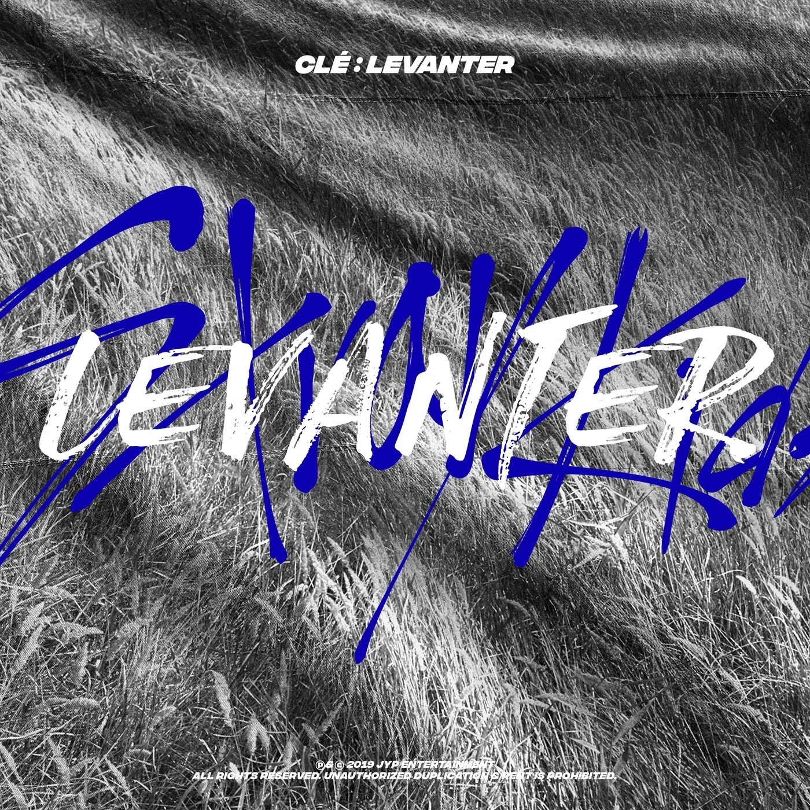
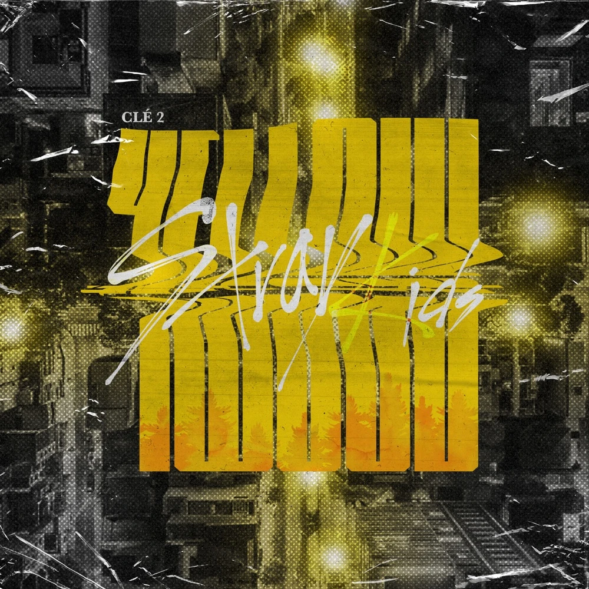
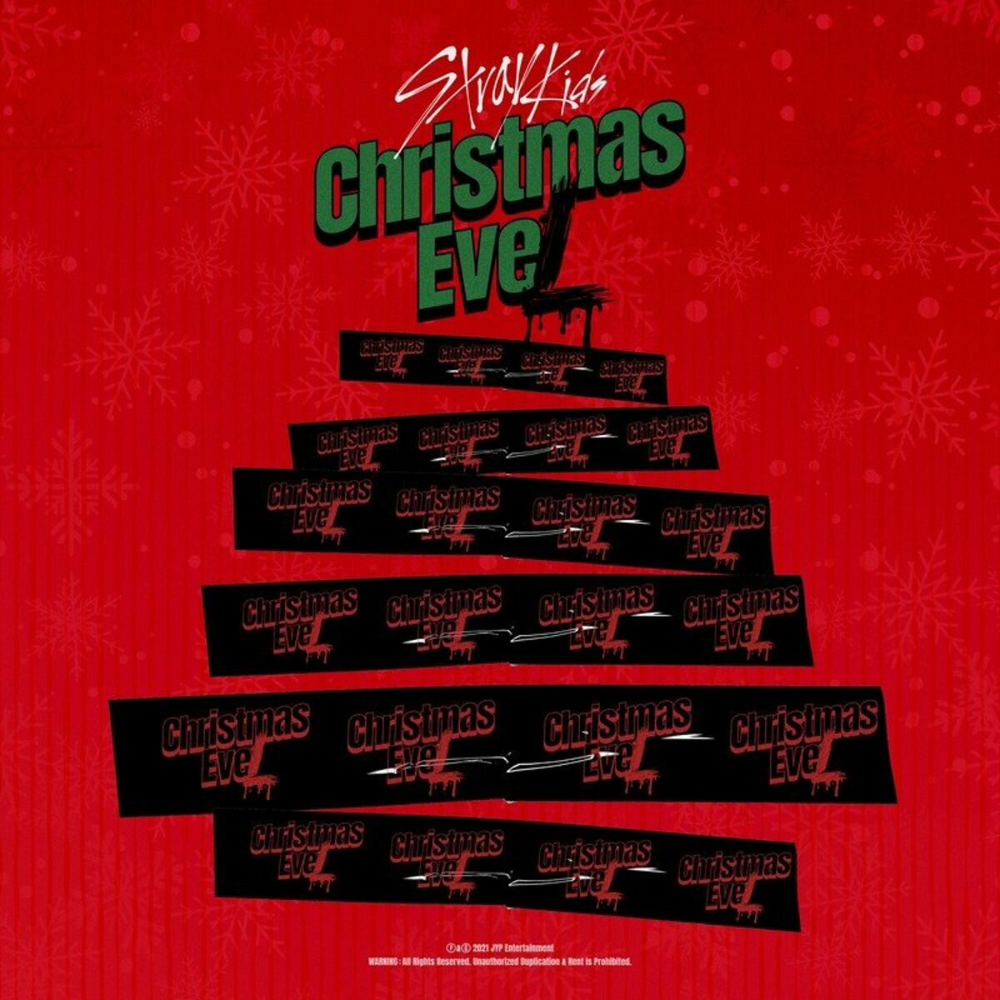

2018
THE BEGINNING
2018 marked Stray Kids’ official debut and the beginning
of their musical identity. After the pre-debut Mixtape,
they released the I am trilogy—I am NOT, I am WHO, and I
am YOU—throughout the year. These releases established
recurring themes of identity, uncertainty, youth, and
finding one’s own direction.
2019
FINDING THEIR DIRECTION
Stray Kids expanded their sound in 2019 through the
Clé series, beginning with Clé 1: MIROH. Yellow Wood
and Clé: LEVANTER continued the year with contrasting
sounds and themes surrounding difficult choices and
moving forward. The era pushed the group beyond the
identity questions of their debut year toward a more
distinct musical direction.

Clé: Levanter

Clé 2: Yellowwood
2020
THE BREAKOUT
2020 marked a major shift in Stray Kids’ sound and
international presence, including their official
Japanese debut with SKZ2020. Their first Korean studio
album, GO生 (GO LIVE), and its repackage IN生 (IN LIFE)
produced “God’s Menu” and “Back Door,” songs closely
associated with their increasingly distinctive,
high-energy style. The year helped establish the bold
sound that would characterize much of their later work.
2021
MAKING NOISE
Following their Kingdom: Legendary War appearance,
Stray Kids returned with their second studio album,
NOEASY. The album leaned into the group’s loud and
unconventional musical identity, particularly through
its title track “Thunderous,” while Christmas EveL
later gave them a more playful seasonal release.
SKZ2021 closed the year by bringing together
re-recorded versions of earlier songs.

CHRISTMAS EVEL
2022
GLOBAL EXPANSION
2022 saw Stray Kids expand dramatically in the global
music market through ODDINARY and MAXIDENT. ODDINARY
became their first release to reach No. 1 on the
Billboard 200, beginning a run of chart-topping albums
in the United States. Musically, the year moved between
the darker intensity of “MANIAC” and the brighter
experimentation of “CASE 143,” while their touring
presence continued to grow.
2023
FIVE-STAR
Stray Kids entered another stage of their career in
2023 with ★★★★★ (5-STAR) and 樂-STAR (ROCK-STAR).
The releases emphasized confidence, spectacle, and the
group’s increasingly recognizable production style while
producing tracks such as “S-Class” and “LALALALA.”
Both releases continued the group’s run of No. 1 debuts
on the Billboard 200.
2024
DOMINATING THE STAGE
In 2024, Stray Kids released ATE, led by “Chk Chk Boom,”
while continuing to expand their international activities.
ATE became their fifth consecutive release to debut at
No. 1 on the Billboard 200, and the group launched the
dominATE world tour later that year. They also continued
their Japanese discography with GIANT and released music
connected to Tower of God.
2025
KARMA
Stray Kids continued their large-scale global era in
2025, including the Japanese release Hollow and their
Korean studio album KARMA. KARMA arrived in August with
“CEREMONY” as its central track, extending the group’s
emphasis on high-impact, self-produced releases. The
year represented a group operating at a much larger
international scale than the one introduced through
Mixtape seven years earlier.